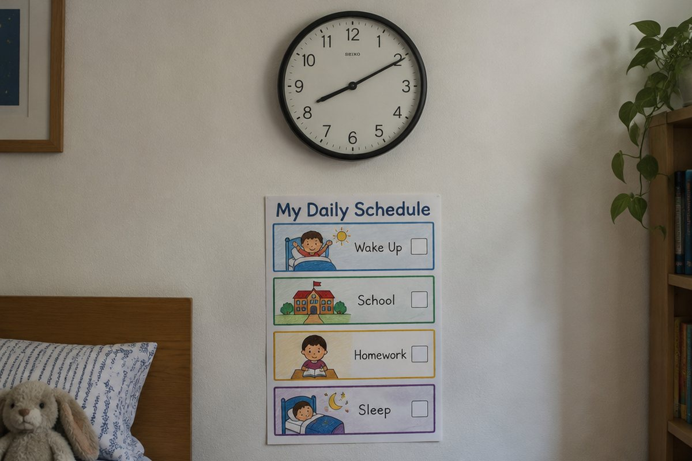

전체 단원 › 5학년 1학기 › 영어 › 하루 일과와 시각
몇 시에 일어나? 하루 일과를 영어로 말해 볼까?

아침에 일어나서 학교에 가고, 저녁에 잠자리에 들기까지 하루가 바쁘죠? 시각과 함께 하루 일과를 영어로 말해 봐요.
시각 묻고 답하기
지금 몇 시인지 물을 때는 "What time is it?(몇 시야?)"이라고 해요.
대답은 "It's seven.(7시야.)"처럼 It's 뒤에 시각을 말해요. 7시 30분은 "It's seven thirty."처럼 시와 분을 차례로 읽어요.
What time is it? - It's eight thirty. (8시 30분이야.)
하루 일과를 나타내는 말
get up(일어나다), eat breakfast(아침을 먹다), go to school(학교에 가다), do my homework(숙제를 하다), go to bed(잠자리에 들다) 같은 말이 있어요.
이런 말을 순서대로 이어 말하면 나의 하루를 소개할 수 있어요.
get up → eat breakfast → go to school → do my homework → go to bed
몇 시에 하는지 말하기
"I get up at 7.(나는 7시에 일어나.)"처럼 시각 앞에는 at을 붙여요.
친구에게 물을 때는 "What time do you get up?(너는 몇 시에 일어나?)"이라고 해요. at은 '~시에'라는 뜻이에요.
What time do you go to bed? - I go to bed at 10.
핵심 낱말
- What time
- 몇 시
- at
- (시각 앞에서) ~시에
- get up
- 일어나다
- go to bed
- 잠자리에 들다
- thirty
- 30, 시각에서는 30분
꼭 알아야 할 표현
| What time is it? | 몇 시야? | 지금 시각을 물을 때 |
| It's seven thirty. | 7시 30분이야. | |
| What time do you get up? | 너는 몇 시에 일어나? | 일과를 물을 때 |
| I get up at 7. | 나는 7시에 일어나. | |
| I go to school at 8:30. | 나는 8시 30분에 학교에 가. | |
| I go to bed at 10. | 나는 10시에 잠자리에 들어. | |
| It's time for lunch. | 점심 먹을 시간이야. |
한 줄 정리
- 시각은 What time is it?으로 묻고 It's ~.로 대답해요.
- 몇 시에 무엇을 하는지는 I get up at 7.처럼 at을 써서 말해요.
- 친구의 일과는 What time do you ~?로 물어요.
학교 교육과정 연결
- [6영02-07] 일상생활 주제에 관한 담화나 글의 세부 정보를 간단한 문장으로 묻거나 답한다.
- [6영01-06] 일상생활 주제에 관한 담화나 글에서 일이나 사건의 순서를 파악한다.